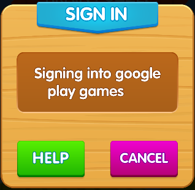

If you are seeing a image like this, either your network connection is slow, or you have a Google Play games log in issure. Sometimes, all you have to do is wait. If you don't want to wait, you can click the button cancel, and play the game as Player ID 0. This won't hurt anything.
How to fix Google Play games cannot log in issue
Step 1: Make sure your internet connection is strong
Make sure you can access Google Play, either through the app or the website.
Step 2: Make sure your have the latest Google play Apps
Make sure you have the latest Google play services & Google play store and Google play games. Please download and install the latest Google play Apps.
Step 3: Make sure Google Play Games app is enable
If you see that the Google Play Games app is disabled, make sure to press the Enable button to activate it.
Step 4: Clear app cache and app data
- From the home screen of your device, navigate to Settings – Apps.
- Scroll down to find the Google Play Games app and open the Storage
- Here you will be able to see the Clear Data and Clear Cache options, so use both of them to refresh the app.
- Follow the steps above to find the Google Play Store app and use the Clear Data and Clear Cache options once again.
Step 6: Reboot and reinstall
- Press and hold the Power button to reboot the Android device. Wait till the device has restarted and is back to Android OS.
- Head over to the Google Play Store, and uninstall the Google Play Games app and reboot your device again.
- Now go back to the Google Play Store and download the Google Play Games app and install it.
Check to see if you are now about to sign into your Google Play Games account, and head over to the next step if you are still facing issues.
Step 6: Complete your Google+ profile
If issues persist, you can also try completing your Google+ profile.
- Using the Chrome browser app, head over to your Gmail and use the tabs to open your Google+
- A pop-up window should take you to your Profile, asking you to add more details and complete your profile.
- Add the remaining details and press the Complete button, and enter your Google account email address that you’re trying to use the Google Play Games app.
Once the process is completed, you will most likely be able to access the Google Play Games service in other apps as well.